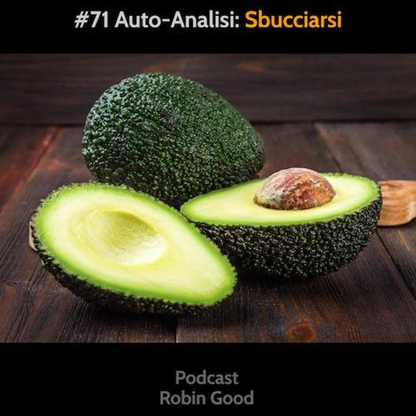

Auto-analisi: il Valore di "Sbucciarsi"

Avendo seguito da vicino tanti progetti e aziende che vogliono creare nuovi prodotti e servizi da offrire online, ho scoperto quanto straordinariamente utile sia il dedicare tempo nel generare un' auto-analisi dell'azienda e del suo posizionamento attraverso gli occhi di chi gli sta dietro (tu).
In altre parole: la capacità di fermarsi, e di mettersi in discussione provando a definirsi "nero su bianco" sia in termini di azienda, sia in termini di persona, è un processo tanto utile quanto sottovalutato.
Lo fanno solamente le aziende e gli imprenditori che hanno capito quanto sia importante l'interrogarsi prima di tutto su chi siamo veramente, cosa abbiamo da offrire e a chi, piuttosto che il perdersi frenetico nelle tattiche e negli strumenti e mode di tendenza.
Per quanto la maggior parte di imprenditori e titolari di aziende pensi di avere già chiarissimo nella propria testa tutto ciò, la realtà dei fatti è che quando mi capita di interfacciarmi con uno di loro, il 99% non è in grado di articolare in maniera chiara, semplice e sintetica ne ciò che fa e rappresenta la sua azienda/attività, ne il suo profilo personale.
Per spiegare la nostra attività a volte dobbiamo parlare per 5-10 minuti, spiegare dettagli e collegamenti che altrimenti riteniamo non renderebbero chiara l'idea.
Per dire chi siamo saliamo spesso su piedistalli che non ci appartengono o che ci siamo assegnati da soli, o ci perdiamo nel fare liste di titoli e impieghi che dicono poco sul chi siamo veramente, cosa ci muove, ci appassiona e soprattutto su cosa inseguiamo e perché.
Eppure queste dovrebbero essere le fondamenta di qualsiasi attività sana. Capire così bene cosa si fa' e a chi ci si rivolge in modo da poterlo distillare in poche parole semplici e comprensibili a tutti.
Ma la cosa più interessante è che nell'avere l'umiltà e la pazienza di affrontare questo processo di scrittura e analisi, possiamo scoprire tantissimo e aumentare di ordini di grandezza la nostra consapevolezza di cosa facciamo e di cosa ci rende veramente speciali.
In pratica, ciò che io faccio con i miei clienti, è di assegnargli la scrittura del proprio "Chi Sono" e di una "Descrizione" della loro azienda in versione sia breve che lunga.
Il "Chi Sono" è un testo che può essere lungo dalle 200 alle 600 parole e che racconta, a differenza del classico curriculum, chi sei dal punto di vista del tuo percorso di vita, dei tuoi interessi, delle tue passioni e ambizioni.
La "Descrizione" breve e quella lunga, rispettivamente di 100 e 300+ parole, sono invece due testi che illustrano in maniera chiara, usando termini terra-terra comprensibili a tutti, ciò che la tua azienda o il tuo marchio offre, a chi lo offre, come lo offre e perché.
Affinché questo processo porti ad una più grande consapevolezza di se stessi e della propria reale missione all'interno di un'attività imprenditoriale, è indispensabile che venga svolto in collaborazione con un amico esperto, o con un coach / formatore con cui rivedere e analizzare - spesso più volte - i testi che emergeranno.
Svolgerlo da solo non produce neanche lontanamente i risultati che si ottengono in due, perché la nostra capacità di auto-analisi critica è inizialmente molto bassa e perché tendiamo a parlarci addosso e a ripetere discorsi, frasi e idee che abbiamo fatte nostre ma che non abbiamo mai realmente messo in discussione o analizzato.
L'auto-analisi critica di qualsiasi attività attraverso il provare a descrivere chi siamo, cosa facciamo, per chi, e i motivi che ci spingono a farlo, è un attività non solo indispensabile per qualsiasi attività che desidera comunicare meglio se stessa, ma è anche il metodo migliore per creare delle solide fondamenta da cui far emergere tutte le attività di PR, comunicazione e marketing che seguiranno.
-------------
Info Utili
• Puoi ascoltare questo podcast su Spotify, iTunes, Spreaker e su altre piattaforme:
https://gopod.me/RobinGood
• Fornisci feedback, critiche, commenti, suggerimenti, idee e domande a questo podcast, usando Telegram e unendoti al gruppo @RobinGoodPodcastFeedback.
Sul gruppo Telegram puoi commentare la puntata con note testuali o vocali. Puoi suggerire tematiche per le prossime puntate e sottoporre domande specifiche che vorresti fossero trattate nelle puntate future.
Esprimi la tua soddisfazione e incoraggiamento diventando anche tu un sostenitore attivo di questo podcast qui: www.patreon.com/Robin_Good
Altri indirizzi utili:
• Seguimi e rimani aggiornato qui:
https://facebook.com/RobinGoodItalia/
• Iscriviti alla newsletter settimanale
dove leggere le mie storie e scoprire tre
nuovi tool utili per chi comunica online:
http://robingood.it/toptools-newsletter
Per qualsiasi altra richiesta:
Ludovica.Scarfiotti@robingood.it
Musica: "Both of us" by Idealism - disponibile su Bandcamp: https://chillhop.bandcamp.com/track/both-of-us